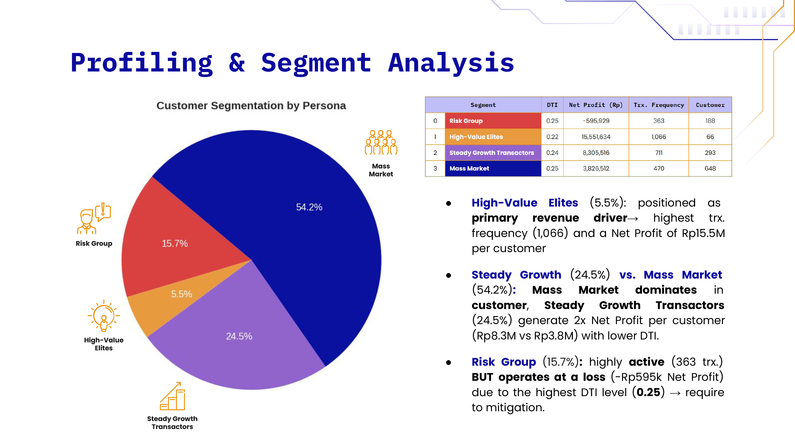

RevoBank needed to transition from traditional portfolio management to a data-driven model to maximize its 1.5% Merchant Discount Rate (MDR) profit margins using 6 months of historical raw credit card and user data. Thus, we need to evaluate sales performance, identify transaction frequency drivers, and execute customer segmentation to provide the product management team with actionable net-profitability strategies.